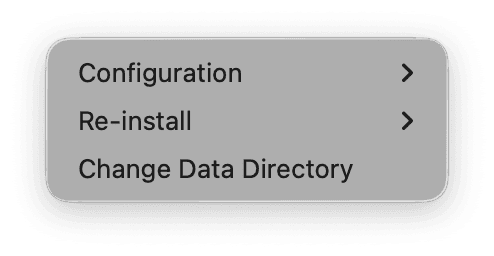
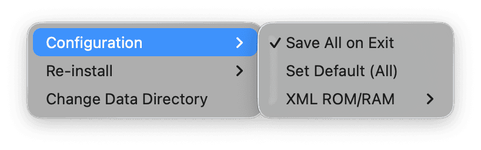
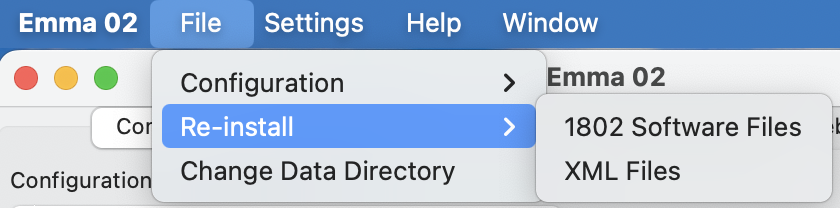
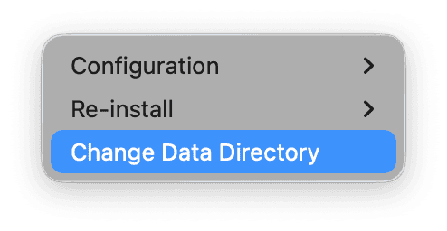
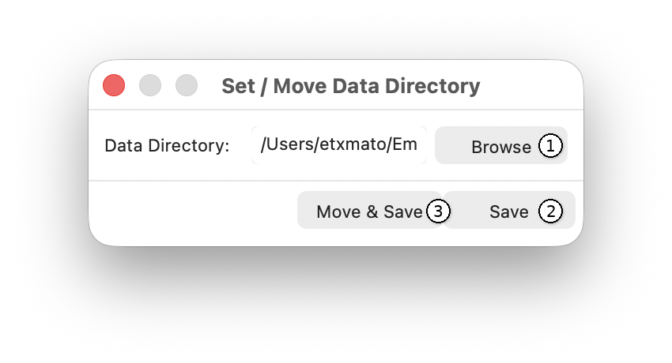

If selected, all global and computer emulator specific settings will be saved when exiting Emma 02.
Resets all computer emulator specific settings, Wav File and Real Cassette Settings, and Function and Hot Keys to the Emma 02 defaults.
Note: Remaining global settings, such as SB Player name, location, email address, and aliases, will not be reset.
By default, this option is set to Latest from GUI, meaning the ROM and RAM configuration is loaded from the XML file, including changes made in the GUI. The second option, Always from XML, forces the ROM and RAM configuration to be loaded from the XML file, ignoring any GUI changes. This is mainly used when developing XML files to test modified ROM or RAM configurations.

This will re-install the default CDP1802 SW files as stored in the Emma 02 data directory. This may be needed to install updated CDP1802 SW files from a newer Emma 02 release or if the currently installed files are corrupt.
When installing a new version of Emma 02, the data directory will NOT be re-installed automatically to avoid overwriting user changes.
This will re-install the default XML files as stored in the Emma 02 XML data directory. This may be needed to install updated XML files from a newer Emma 02 release or if the currently installed files are corrupt.
When installing a new version of Emma 02, the XML data directory will NOT be re-installed automatically to avoid overwriting user changes.
The Change Data Directory option is shown below:

This option allows you to change the location of the data directory.
The default data directory location is:
If an older version of Emma 02 was used previously, the data directory may be located in:
A window will open with the following buttons:

Use Browse (1) to select a new location. Use Save (2) to save the new location only; the data directory must then be moved manually. Use Move & Save (3) to save and move the existing data directory and files to the new location.
When moving the data directory to another disk, the process may take a few minutes depending on disk speed.
In all cases, settings will be reset to their default values, similar to the Set Default (All) menu action.
See the Directory and File Structure section.